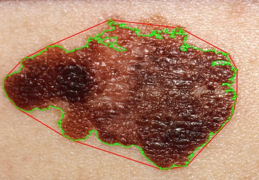
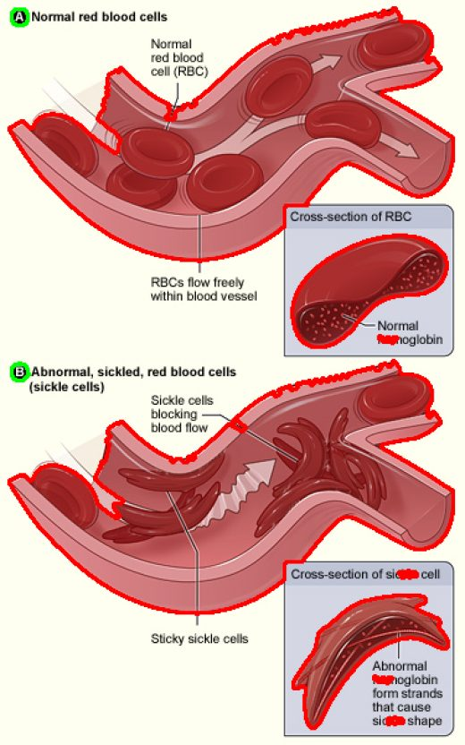
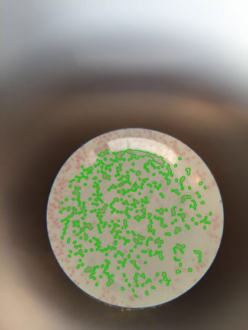

CV Image Processing Toolkit · Python · OpenCV
Seeing, step by step.
Classical computer vision: edges, contours, shapes, and a few medical images. No deep learning, just the maths. This page rebuilds itself on every push.
Pick a photo. Step through it.
Use the arrow keys once the picture is focused.
Do it yourself.
Runs in your browser. Drag the slider, or drop in your own photo. Nothing is uploaded.
Same tools, medical images.
Open-licensed images, educational only. Not a diagnosis.
Chest X-ray
Drag to compare. Adaptive contrast brings out ribs and tissue.
Retina edge map
Green channel, CLAHE, Canny. Noisy: a dedicated vessel filter would do better.

Border check
Green is the real edge, red the convex hull. Low solidity means a jagged border.

Cell shape metrics
Run on an NHLBI illustration, not a real smear, so this shows the metrics rather than detecting real cells.

Blood smear
Mask the eyepiece circle, then distance transform and watershed split touching cells.
Nothing here is hand-edited.
Every push runs the tests, regenerates each image and number from the real code, and redeploys.
img = load_image("data/real/book.jpg")
mask = threshold_otsu(blur(to_grayscale(img)))
print([classify_contour(c) for c in find_contours(mask, 100)]) # ['rectangle']